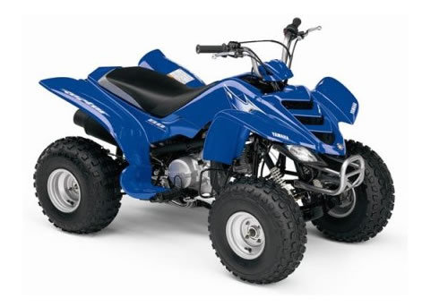
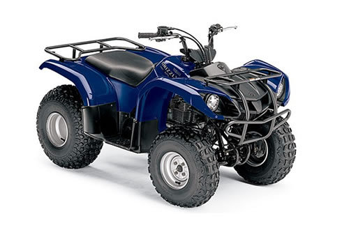

| Yamaha Raptor 50 service manual repair 2004-2008 YFM50 | |
 |
Instant download of the factory repair manual for the 2004-2008 Yamaha Raptor 50 youth atv. 235 pages. |
 |
| Yamaha Moto-4 60 service manual repair 1986 YF60 4-Zinger | |
| Instant download of the factory repair manual for the 1986 Yamaha Moto-4 60 youth atv, also known as the 4-Zinger. 151 pages. | |
|
| Yamaha Badger 80 service manual repair 1985-1988 YFM80 | |
 |
Instant download of the factory repair manual for the 1985-1988 Yamaha YFM80 Badger 80 Moto-4 youth atv. 173 pages. |
|
| Yamaha Badger 80 service manual repair 1992-2001 YFM80 | |
| Instant download of the factory repair manual for the 1992-2001 Yamaha YFM80 Badger 80 youth atv. 216 pages. | |
|
| Yamaha Raptor 80 service manual repair 2002-2008 YFM80W | |
 |
Instant download of the factory repair manual for the 2002-2008 Yamaha Raptor 80 youth atv. This is the 1992-2001 Badger 80 manual with the updates for the Raptor 80. 232 pages. |
|
| Yamaha Grizzly 80 service manual repair 2005-2008 YFM80G | |
 |
Instant download of the factory repair manual for the 2005-2008 Yamaha Grizzly 80 youth atv. This is the 1992-2001 Badger 80 manual with the updates for the Grizzly 80. 240 pages. |
|
| Yamaha Raptor 90 service manual repair 2009-2010 YFM90 | |
 |
Instant download of the factory repair manual for the Yamaha Raptor 90 youth atv. Specifically for 2009 models, but can also be used for later models as there were only minor changes. 228 pages. |
|
| Yamaha Raptor 90 service manual repair 2011-2013 YFM90R | |
 |
Instant download of the factory repair manual for the Yamaha Raptor 90 youth atv. Specifically for 2011 models, but can be used for models through 2013 as there were only minor changes. 231 pages. |
|
| Yamaha Moto-4 100 Champ service manual repair 1987-1991 YFM100 | |
| Instant download of the factory repair manual for the 1987-1991 Yamaha Moto-4 100 Champ youth atv. 238 pages. | |
|
| Yamaha Breeze 125 service manual repair 1989-2004 YFA1 | |
| Instant download of the factory repair manual for the 1989-2004 Yamaha Breeze 125 youth atv. 286 pages. | |
|
| Yamaha Grizzly 125 service manual repair 2004-2013 YFM125G | |
 |
Instant download of the factory repair manual for the Yamaha Grizzly 125 youth atv. Specifically for 2004 models, but can also be used for models through 2013 as there were only minor changes. This is the 1989-2004 Breeze manual with the updates for the Grizzly 125. 322 pages. |
|